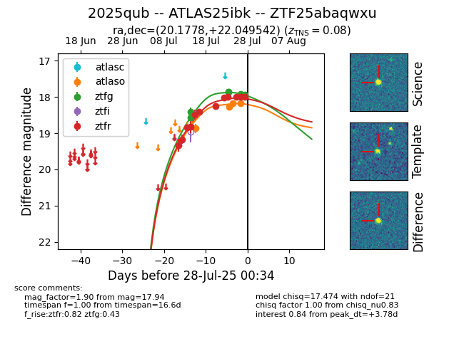

Target 2025qub at 2025-07-28 00:34, see:
FINK: fink-portal.org/2025qub
Lasair: lasair-ztf.lsst.ac.uk/objects/2025qub
ALeRCE: alerce.online/object/2025qub
TNS: wis-tns.org/object/2025qub
YSE: ziggy.ucolick.org/yse/transient_detail/2025qub
alt names
ZTF25abaqwxu (ztf,fink)
2025qub (tns,yse)
ATLAS25ibk (atlas)
coordinates:
equatorial (ra, dec) = (20.1778,+22.04954)
galactic (l, b) = (131.8395,-40.31536)
photometry
last atlaso=18.17, ztfg=17.94, ztfr=18.00
4 atlaso, 8 ztfg, 12 ztfr detections
